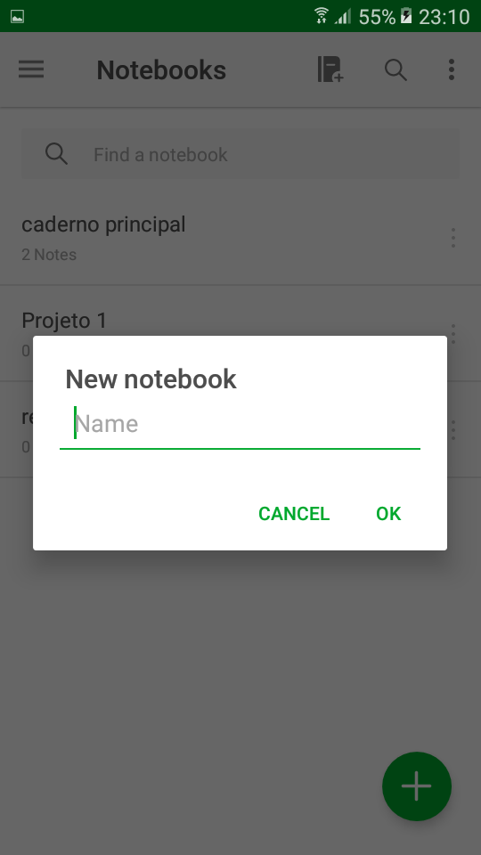

Matrizes de Rastreabilidade
| Versionamento |
|---|
| Versões |
Forward-To
| ELICITADOR | ARTEFATO DE ORIGEM | TIPO | REQUISITO | OBSERVAÇÕES |
|---|---|---|---|---|
| Equipe Evernote | Rich Picture | |||
| Funcional | Criar um novo caderno | RP01 | ||
| Funcional | Criar uma nota | RP02 | ||
| Funcional | Anexar arquivo na nota | RP02 | ||
| Funcional | Compartilhar nota | RP02 | ||
| Funcional | Adicionar lembrete à nota | RP02 | ||
| Funcional | Mover nota de caderno | RP02 | ||
| Funcional | Atualizar para conta premium | RP02 | ||
| Funcional | Baixar caderno | RP02 | ||
| Equipe Evernote | Questionário | |||
| Funcional | Sincronizar caderno | Questionário requisito 2 | ||
| João Victor e Marcelo | Story Board | |||
| Funcional | Criar checklist dentro de uma nota | SB02 - Criando Listas | ||
| Funcional | Editar nota | SB01 - Uso diário | ||
| Funcional | Editar nota | |||
| Funcional | O Usuário deve ser capaz de inserir um lembrete em uma nota. | SB01 - Uso diário | ||
| Funcional | O Usuário deve visualizar as notas. | SB01 - Uso diário | ||
| Funcional | O Usuário deve ser capaz de inserir uma foto em uma nota. | SB01 - Uso diário | ||
| Funcional | O Usuário deve ser capaz de inserir uma lista com marcadores no texto de uma nota | SB02 - Criando Listas | ||
| Funcional | Criar um novo caderno | |||
| Equipe Evernote | Brainstorming | |||
| Funcional | O Usuário deve visualizar as notas. | BS01 | ||
| Funcional | O Usuário deve ser capaz de sincronizar os dispositivos. | BS01 | ||
| Funcional | O Usuário deve ser capaz de editar um nota. | BS01 | ||
| Funcional | O Usuário deve ser capaz de compartilha uma nota. | BS01 | ||
| Funcional | O Usuário deve ser capaz de anexar arquivos do google drive em uma nota. | BS01 | ||
| Funcional | O Usuário deve ser capaz de gravar áudio em uma nota. | BS01 | ||
| Funcional | O Usuário deve ser capaz de tirar uma foto para uma nota. | BS01 | ||
| Funcional | O Usuário deve ser capaz de inserir uma foto em uma nota. | BS01 | ||
| Funcional | O Usuário deve ser capaz de esconder a barra de ferramentas. | BS01 | ||
| Funcional | O Usuário deve ser capaz de duplicar uma nota. | BS01 | ||
| Equipe Evernote | MoSCoW | |||
| Não Funcional | Segurança dos dados | MSCW01 | ||
| Funcional | Funcionamento offline | MSCW01 | ||
| Funcional | Excluir nota | MSCW02 requisito 8 | ||
| Funcional | Renomear nota | MSCW02 requisito 12 | ||
| Funcional | Alterar formatação do texto da nota | MSCW02 requisitos 18 - 25 | ||
| Funcional | Criar lista enumerada | MSCW02 requisitos 28 | ||
| Equipe Evernote | Cenários | |||
| Funcional | Restaurar nota | C11 | ||
| Funcional | Ativar bloqueio de senha | C01 | ||
| Funcional | Desativar o bloqueio de senha | C02 | ||
| Funcional | Alterar o bloqueio de senha | C03 | ||
| Funcional | Alterar tempo de bloqueio | C05 | ||
| Equipe Evernote | Casos de uso | |||
| Funcional | Realizar login na aplicação | UC03 - Criar lembrete | ||
| Funcional | Pesquisar notas dentro do caderno | UC05 - Pesquisar nota | ||
| Funcional | Deletar permanentemente | UC10 - Lixeira | ||
| Funcional | Cadastrar no app | UC08 - Cadastro | ||
| Funcional | Cadastrar utilizando conta google | UC08 - Cadastro | ||
| Equipe Evernote | Product Backlog | |||
| Funcional | Terminar sessão | US04 | ||
| Funcional | Realizar login utilizando o Google | US05 | ||
| Funcional | Gerenciar disposivos | US11 | ||
| Funcional | Convidar amigos | US12 | ||
| Funcional | Salvar nota | US20 | ||
| Funcional | Pesquisar na nota | US23 | ||
| Funcional | Ver estatísticas da nota | US25 | ||
| Funcional | Renomear um caderno | US28 | ||
| Funcional | Excluir o caderno | US29 | ||
| Funcional | Ordenar cadernos por nome ou data | US30 | ||
| Funcional | Classificar caderno por | US31 | ||
| Funcional | Adicionar caderno à tela inicial do celular | US33 | ||
| Funcional | Restaurar caderno apagado | US35 | ||
| Equipe Evernote | Introspecção | |||
| Funcional | O Usuário deve visualizar as notas. | IT01 | ||
| Funcional | O Usuário deve ser capaz de sincronizar os disposivos. | IT01 | ||
| Funcional | O Usuário deve ser capaz de editar um nota. | IT01 | ||
| Funcional | O Usuário deve ser capaz de compartilha uma nota. | IT01 | ||
| Funcional | O Usuário deve ser capaz de “favorar” uma nota. | IT01 | ||
| Funcional | O Usuário deve ser capaz de inserir um lembrete em uma nota. | IT01 | ||
| Funcional | O Usuário deve ser capaz de imprimir uma nota. | IT01 | ||
| Funcional | O Usuário deve ser capaz de excluir uma nota. | IT01 | ||
| Funcional | O Usuário deve ser capaz de visualizar uma lixeira. | IT01 | ||
| Funcional | O Usuário deve visualizar a data de uma nota. | IT01 | ||
| Funcional | O Usuário pode visualizar o local de criação de uma nota. | IT01 | ||
| Funcional | O Usuário deve ser capaz de editar o titulo de uma nota. | IT01 | ||
| Funcional | O Usuário tem acesso a informações detalhas de uma nota. | IT01 | ||
| Funcional | O Usuário deve ser capaz de copiar uma nota inteira | IT01 | ||
| Funcional | O Usuário deve ser capaz de copiar um “link interno” de uma nota. | IT01 | ||
| Funcional | O Usuário pode visualizar a hora de criação de uma nota. | IT01 | ||
| Funcional | O Usuário pode personalizar a barra de ferramentas de uma nota. | IT01 | ||
| Funcional | O Usuário deve ser capaz de alterar a fonte do texto de uma nota. | IT01 | ||
| Funcional | O Usuário deve ser capaz de alterar o tamanho do texto de uma nota. | IT01 | ||
| Funcional | O Usuário deve ser capaz de alterar a cor do texto de uma nota. | IT01 | ||
| Funcional | O Usuário deve ser capaz de alterar o texto de uma nota para negrito. | IT01 | ||
| Funcional | O Usuário deve ser capaz de alterar o texto de uma nota para Itálico. | IT01 | ||
| Funcional | O Usuário deve ser capaz de alterar o texto de uma nota para sublinhado. | IT01 | ||
| Funcional | O Usuário deve ser capaz de alterar o texto de uma nota para traçado. | IT01 | ||
| Funcional | O Usuário deve ser capaz de marca o texto de uma nota | IT01 | ||
| Funcional | O Usuário deve ser capaz de inserir código-fonte em uma nota. | IT01 | ||
| Funcional | O Usuário deve ser capaz de inserir uma lista com marcadores no texto de uma | IT01 | ||
| Funcional | O Usuário deve ser capaz de inserir uma lista numerada no texto de uma nota. | IT01 | ||
| Funcional | O Usuário deve ser capaz de inserir uma caixa de seleção em uma nota. | IT01 | ||
| Funcional | O Usuário deve ser capaz de alinha o texto de uma nota. | IT01 | ||
| Funcional | O Usuário deve ser capaz de inserir uma tabela em uma nota. | IT01 | ||
| Funcional | O Usuário deve ser capaz de inserir uma linha em uma nota. | IT01 | ||
| Funcional | O Usuário deve ser capaz de anexar arquivos em uma nota. | IT01 | ||
| Funcional | O Usuário deve ser capaz de anexar arquivos do google drive em uma nota. | IT01 | ||
| Funcional | O Usuário deve ser capaz de gravar áudio em uma nota. | IT01 | ||
| Funcional | O Usuário deve ser capaz de tirar uma foto para uma nota. | IT01 | ||
| Funcional | O Usuário deve ser capaz de inserir uma foto em uma nota. | IT01 | ||
| Funcional | O Usuário deve ser capaz de esconder a barra de ferramentas. | IT01 | ||
| Funcional | O Usuário deve ser capaz de duplicar uma nota. | IT01 | ||
| Funcional | O Usuário deve ser capaz de alterar a data e hora da criação de uma nota | IT01 | ||
| Equipe Evernote | NFR | |||
| Não Funcional | Usar FIREWALLS | NFR Segurança | ||
| Não Funcional | Usar VPNs | NFR Segurança | ||
| Não Funcional | Usar origem de endereço de IP | NFR Segurança | ||
| Não Funcional | Criptografar usando DKIM | NFR Segurança | ||
| Não Funcional | Usar politica DMARC | NFR Segurança | ||
| Não Funcional | Usar Email e senha | NFR Segurança | ||
| Não Funcional | Limitar tentativas de login | NFR Segurança | ||
| Não Funcional | Permitir medição de força | NFR Segurança | ||
| Não Funcional | Usar Salt exclusivo | NFR Segurança | ||
| Não Funcional | Usar retenção de notas | NFR Segurança | ||
| Não Funcional | Armazenar senha por PBKDF2 | NFR Segurança | ||
| Não Funcional | Usar token de autenticação | NFR Segurança | ||
| Não Funcional | Utilizar modo offline | NFR Desempenho | ||
| Não Funcional | Utilizar imei e SIM | NFR Desempenho | ||
| Não Funcional | Utilizar Cache | NFR Desempenho | ||
| Não Funcional | Utilizar modo online | NFR Desempenho | ||
| Não Funcional | Utilizar armazenamento em nuvem | NFR Desempenho | ||
| Não Funcional | Utilizar pesquisa avançada | NFR Desempenho | ||
| Não Funcional | Disponibilizar tecnicas de pesquisas | NFR Desempenho | ||
| Não Funcional | Utilizar metadados de notas | NFR Desempenho | ||
| Não Funcional | Utilizar dois data centers | NFR Desempenho | ||
| Não Funcional | Armazenar conteudo das notas | NFR Desempenho | ||
| Não Funcional | Disponibilizar sistema de ajuda | NFR Usabilidade | ||
| Não Funcional | Elaborar documentação de Usuário | NFR Usabilidade | ||
| Não Funcional | Usar tutorial | NFR Usabilidade | ||
| Não Funcional | Usar icones Intuitivos | NFR Usabilidade | ||
| Não Funcional | Usar Pesquisa rapida | NFR Usabilidade | ||
| Não Funcional | Usar categorias de notas | NFR Usabilidade | ||
| Não Funcional | Usar interface limpa | NFR Usabilidade | ||
| Não Funcional | Usar linguagem simples | NFR Usabilidade | ||
| Não Funcional | Usar categoria de nomes | NFR Usabilidade | ||
| Não Funcional | Usar rotulos | NFR Usabilidade | ||
| Não Funcional | Usar linkls | NFR Usabilidade | ||
| Não Funcional | Usar apresentação simples de conteudo | NFR Usabilidade | ||
| Não Funcional | usar formato de informação simples | NFR Usabilidade | ||
| Não Funcional | Usar layout agradavel | NFR Usabilidade | ||
| Não Funcional | Usar graficos | NFR Usabilidade | ||
| Não Funcional | Usar localização de informação aparente | NFR Usabilidade | ||
| Não Funcional | Apresentar qualidade nos resultados | NFR Usabilidade | ||
| Não Funcional | Usar Icones grandes | NFR Usabilidade | ||
| Não Funcional | Usar contraste seguindo W3C | NFR Usabilidade | ||
| Não Funcional | Usar fontes e tamanho que sigam regras da W3C | NFR Usabilidade |
Backward-To
| ID | Requisito | Product Backlog | Esp. Casos de Uso/UML | Cenário | Léxico | MoSCoW | First Things First | Análise de Protocolo/Observação Participativa | Storyboard/Brainstorm | Questionário | RichPicture | Gráfico i* |
|---|---|---|---|---|---|---|---|---|---|---|---|---|
| RF41 | Etiquetar nota | - | UCS04 | CE17 | Nota | - | - | AP01 | SB01 | - | RP09 | i*01 |
| RF42 | Coletar Fotos | - | - | CE16 | - | - | FTF01 | AP01 | - | - | RP09 | - |
| RF02 | Sincronizar dispositivo | - | - | - | - | MSCW02 | FTF02 | - | BS01 | - | RP01 | i*03 |
| RF35 | Gravar nota de áudio | - | - | - | Nota | MSCW02 | FTF02 | - | BS01 | - | RP01 | - |
| RF34 | Anexar arquivos em nota | US22 | - | - | Anexo | MSCW02 | FTF02 | AP01 | BS01 | - | RP01 | i*05 |
| RF43 | Criar nota de caligrafia | - | - | - | Nota | - | FTF01 | - | - | - | RP06 | - |
| RF44 | Digitalizar documento | - | - | - | Digitalização | - | FTF01 | - | - | - | RP04 | - |
| RF45 | Usar buscador de texto | US23 | UC05 | CE20 | - | MSCW02 | FTF01 | AP01 | - | - | - | i*01 |
| RF46 | Criar lista | US08 | - | - | - | - | - | - | SB05 | - | RP02 | - |
| RF47 | Criar lembrete | US09 | UC03 | CE04 | Lembrete | MSCW01 | - | AP01 | SB04 | - | RP03 | i*06 |
| RF48 | Nomear lembrete | US10 | UML03 | - | Lembrete | - | - | AP01 | - | - | RP01 | - |
| RNF77 | Dados dispostos na núvem | - | - | - | Núvem | - | - | - | - | Q01 | RP01 | i*03 |
| RF04 | Compartilhar nota | US24 | - | CE22 | Nota | MSCW02 | FTF02 | AP01 | BS01 | Q01 | RP06 | i*05 |
| RF49 | Logar usando conta Google | US05 | - | - | MSCW02 | - | - | - | Q01 | - | i*03 | |
| RF50 | Adicionar caderno aos atalhos | - | - | CE18 | Caderno | - | - | - | - | - | - | - |
| RF51 | Salvar captura de tela de uma página web | US13 | UC02 | CE07 | Captura | - | FTF01 | - | - | - | - | - |
| RF52 | Realizar avaliação do aplicativo | - | - | CE21 | - | - | - | - | - | - | - | - |
| RF53 | Escolher dados de cobrança da conta Evernote | - | - | - | - | MSCW02 | - | - | - | - | - | - |
| RF54 | Realizar login | - | UC09 | - | - | - | - | AP01 | - | - | - | i*03 |
| RF55 | Recuperar senha | - | - | CE23 | - | - | - | AP01 | - | - | - | - |
| RF56 | Realizar upgrade de conta | US10 | UCS06 | CE24 | Upgrade | - | - | AP01 | - | - | - | - |
| RF57 | Consultar Ajuda e aprendizagem | - | - | CE25 | - | - | - | - | - | - | - | - |
| RF13 | Obter informações de uma nota | US25 | - | CE26 | Nota | MSCW02 | FTF02 | - | - | - | - | - |
| RF39 | Duplicar nota | US19 | - | - | Nota | MSCW02 | FTF02 | - | BS01 | - | - | - |
| RNF76 | Sinergia com outras ferramentas conhecidas | - | - | - | - | - | - | - | - | Q01 | - | i*07 |
| RF58 | Anexar arquivo de outras ferramentas | - | UC06 | CE09 | Anexo | - | - | - | - | Q01 | - | i*05 |
| RF59 | Administrar conta | US06 | UC01 | - | - | - | - | - | - | - | - | - |
| RF60 | Realizar cadastro | US01 | UC08 | - | - | - | - | - | - | - | - | - |
| RF08 | Excluir nota | US16 | - | - | Nota | MSCW02 | FTF02 | - | - | - | - | - |
| RF61 | Restaurar documento | US18 | UC07 | CE11 | - | - | - | - | - | - | - | i*06 |
| RF62 | Testar Evernote Premium | - | - | - | - | - | - | - | - | - | - | i*11 |
| RF63 | Testar Evernote Business | - | - | - | - | - | - | - | - | - | - | i*11 |
| RF64 | Criar caderno | US27 | UCS2 | CE10 | Caderno | - | - | - | - | Q01 | - | i*03 |
| RF65 | Nomear caderno | US28 | - | - | Caderno | - | - | - | - | - | - | - |
| RF66 | Disponibilizar caderno em modo offline | - | - | - | Caderno, Offline | MSCW01 | - | - | - | - | RP01 | i*05 |
| RF40 | Definir data de lembrete | - | UML03 | - | Lembrete | MSCW02 | FTF02 | AP01 | - | - | RP01 | - |
| RF16 | Definir hora de lembete | - | UML03 | - | Lembrete | MSCW02 | FTF02 | AP01 | - | - | RP01 | - |
| RF67 | Marcar nota como feita | - | - | - | Nota | - | - | - | - | - | RP01 | - |
| RF68 | Listar cadernos | US30 | - | - | Caderno | MSCW02 | - | AP01 | - | - | - | - |
| RF01 | Listar notas | - | - | - | Nota | MSCW02 | FTF02 | AP01 | BS01 | - | - | - |
| RF69 | Inserir tópico de texto | - | - | - | - | MSCW02 | - | - | - | - | - | - |
| RF70 | Inserir texto em notas | - | - | - | Nota | MSCW02 | - | - | - | - | - | - |
| RF18 | Escolher fonte de texto | US21 | - | - | - | MSCW02 | - | - | - | - | - | - |
| RF28 | Enumerar tópicos de texto | - | - | - | - | MSCW02 | - | - | - | - | - | - |
| RF05 | Marcar nota aos favoritos | - | - | - | Nota | MSCW02 | FTF02 | - | - | - | - | - |
| RF07 | Imprimir nota | - | - | - | Nota | MSCW02 | FTF02 | - | - | - | - | i*04 |
| RF03 | Editar nota | US14 | - | - | Nota | MSCW02 | FTF02 | AP01 | BS01 | - | - | - |
| RF09 | Visualizar lixeira | - | - | CE15 | - | MSCW02 | FTF02 | - | - | - | - | - |
| RF71 | Nomear etiqueta | - | - | Etiqueta | - | - | - | - | - | RP09 | - | |
| RF72 | Bloquear senha | US06 | - | CE01 | Etiqueta | - | - | - | - | - | - | - |
| RF73 | Esvaziar lixeira | - | - | CE13 | - | - | - | - | - | - | - | - |
| RF74 | Criar nota simples | US13 | UC04 | CE03 | Nota | - | - | AP01 | - | Q01 | RP08 | - |
| RF75 | Criar etiqueta | - | - | CE19 | Etiqueta | - | - | AP01 | - | Q01 | RP09 | i*01 |
Forward-From
| Aplicativo | US | Descrição |
|---|---|---|
| IMG01 IMG02 |
US01 | Fazer cadastro no aplicativo |
| IMG01 IMG03 |
US02 | Fazer cadastro utilizando os dados da minha conta Google |
| IMG04 IMG05 IMG03 |
US03 | Realizar login na aplicação |
| IMG06 IMG07 |
US04 | Terminar sessão |
| IMG03 IMG06 |
US05 | Realizar login utilizando o Google |
| IMG09 | US06 | Ativar bloqueio de senha |
| IMG10 | US07 | Desativar bloqueio de senha |
| IMG11 | US08 | Alterar o bloqueio de senha |
| IMG12 | US09 | Alterar tempo de bloqueio |
| IMG13 IMG14 |
US10 | Atualizar para conta premium |
| IMG15 IMG16 |
US11 | Gerenciar dispositivos |
| IMG17 IMG18 |
US12 | Convidar amigos |
| IMG19 IMG20 IMG21 |
US13 | Criar nota |
| IMG22 IMG23 |
US14 | Editar nota |
| IMG22 IMG23 |
US15 | Renomear nota |
| IMG24 IMG25 |
US16 | Excluir nota |
| IMG26 IMG27 |
US17 | Mover nota de caderno |
| IMG29 IMG30 |
US18 | Restaurar nota de caderno |
| IMG28 | US19 | Duplicar nota |
| IMG19 IMG20 IMG21 IMG22 IMG23 |
US20 | Salvar nota |
| IMG31 IMG32 |
US21 | Alterar formatação do texto da nota |
| IMG33 IMG34 |
US22 | Anexar arquivo na nota |
| IMG35 | US23 | Pesquisar na nota |
| IMG36 IMG37 IMG38 IMG39 |
US24 | Compartilhar nota |
| IMG40 IMG41 |
US25 | Ver estatísticas da nota |
| IMG42 IMG43 |
US26 | Criar checklist dentro de uma nota |
| IMG44 IMG45 |
US27 | Criar um novo caderno |
| IMG46 | US28 | Renomear um caderno |
| IMG47 | US29 | Excluir o caderno |
| IMG48 | US30 | Ordenar cadernos por nome ou data |
| IMG49 | US31 | Classificar caderno |
| IMG50 | US32 | Baixar caderno |
| IMG | US33 | Adicionar caderno à tela inicial do celular |
| IMG51 | US34 | Sincronizar caderno |
| IMG | US35 | Restaurar caderno apagado |
| IMG52 | US36 | Compartilhar caderno |
| IMG54 IMG55 |
US37 | Pesquisar notas dentro do caderno |
| IMG53 | US38 | Deletar permanentemente |
IMG01

IMG02

IMG03

IMG04

IMG05

IMG06

IMG07
IMG08
IMG09

IMG10

IMG11

IMG12

IMG13

IMG14

IMG15

IMG16

IMG17
IMG18

IMG19

IMG20

IMG21

IMG22

IMG23

IMG24

IMG25

IMG26

IMG27

IMG28
IMG29
IMG30
IMG31

IMG32

IMG33

IMG34
IMG35

IMG36

IMG37

IMG38

IMG39
IMG40

IMG41
IMG42

IMG43

IMG44

IMG45

IMG46
IMG47
IMG48

IMG49
IMG50

IMG51

IMG52
IMG53

IMG54

IMG55

Referências
[Toranzo02] Toranzo, M.; Castro, J. & Mello, E. "Uma proposta para melhorar o rastreamento de requisitos". In: WER02 - Workshop em Engenharia de Requisitos, Valencia, Espanha, Novembro 11-12, 2002.